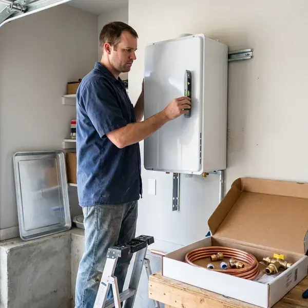

Electric Tankless Water Heater Installation in Margate, FL
On-demand hot water for homes across Margate, FL, sized by flow rate and temperature rise.
- Certified Plumbers
- Fast Installs
- Fast Local Service
- Panel Check Included

Need Electric Tankless Installed in Margate, FL?
Call (904) 925-7356 to book a sizing visit and panel review.
Electric Tankless Heaters for Margate, FL Homeowners
HDF Plumbing installs electric tankless water heaters for homes across Margate and the nearby Florida towns. These wall-mounted units heat water as it flows, which saves the floor space a tank took and ends standby heat loss. No vent is needed.
Some of what we do:
- Point-of-use units for bathrooms, kitchens and guest suites
- Unit sizing by flow and temperature rise
- Isolation valves for descaling

Additional Plumbing Installation Services in Margate, FL
We install water heaters, pumps, lines, and fixtures across Margate, FL with precision workmanship that meets every local code.


Customers
Why Choose HDF Plumbing for Electric Tankless Water Heater Installation in Margate, FL?
Every install we do gets the same performance and safety checks. We test flow, outlet temperature and every water connection, and we confirm the breakers and wire gauge match the manufacturer chart before the unit is energized. You get a walkthrough.
- Wall Mounted, Wall-mounted units clear the floor in garages and closets.
- Energy Savings, Water is heated only when you need it, which cuts wasted energy.
- Long Lifespan, Electric tankless units usually outlast tank heaters, and parts can be replaced.
Citywide Coverage
Homes, condos and guest suites throughout Margate are regular work for us. These units fit in garages and closets easily.
Experienced Team
Our plumbers know electric tankless well, including the electrical demands and water conditions found in Florida. Training keeps them current on new units.
Safety-First Approach
Wiring, overcurrent protection and water pressure are all checked during installation. Your family's safety is our first concern.
Trusted Certified Margate Plumbing Services Professionals
At HDF Plumbing, we are proud to offer certified plumbing services throughout Margate, FL. Those papers on the wall mean something. Our plumbers hold recognized industry credentials, and they follow strict safety and quality rules on every repair, installation and maintenance call we run.
Call Us Now PHCC Plumbing Contractor Recognition
PHCC Plumbing Contractor Recognition Better Business Bureau (BBB) Accreditation
Better Business Bureau (BBB) Accreditation Angi Certified Pro
Angi Certified Pro ISO 9001 Quality Management Certification
ISO 9001 Quality Management CertificationWhole-Home and Point-of-Use Tankless Heaters in Margate, FL
Residential Electric Tankless Heater Installation in Margate
Main water line size matters on electric tankless as much as panel size. A 3/4 inch line with good pressure feeds a whole-home unit fine, but a 1/2 inch line or low pressure can keep the unit from reaching full flow, so we check both before recommending a model. Permits are on us. Salt air in coastal parts of Florida corrodes outdoor fittings and exposed metal pipe faster than in inland areas.

Point-of-Use Electric Tankless Installation in Margate
A guest bath or a far kitchen sink can take a minute to get hot water from the main heater. Installing a small unit at the fixture gives hot water in seconds and wastes less water. They mount under cabinets. Small circuits are usually enough.
Electric Tankless Installation Cost in Margate, FL
Point-of-use electric tankless costs far less than a whole-home system. Whole-home installs often need multiple circuits and sometimes a panel upgrade, and that electrical work can cost as much as the unit itself. Your quote shows it all. We also compare operating costs with a tank.
Hard Water Protection for Tankless Units in Margate
Hard water builds scale on tankless heating elements, which cuts efficiency and can trigger error codes. Around Margate, flushing the water heater yearly and descaling tankless units helps keep mineral buildup under control. We recommend a softener or a scale inhibitor ahead of the unit, and every install gets service valves so the heater can be flushed with a descaling solution once a year. It is a short service.
Electric Tankless Water Heater Sizing and Selection in Margate
Sizing comes down to two numbers, flow rate and temperature rise. A 70 degree rise with a 27 kW unit gives roughly 2.6 GPM, enough for one shower and a sink. Summer water helps. We check your panel and plumbing layout too.
Commercial Electric Tankless Water Heater Solutions in Margate, FL
Salons, offices and small restaurants in Margate, FL use electric tankless to save space and cut standby loss. We install heavy-duty three-phase units where the building has that service, or several single-phase units at the points of use when it does not. We keep downtime short. We schedule around your business.
Cost Comparison: Electric Tankless vs. Traditional in Margate, FL
Upfront, electric tankless usually costs more than a tank because of the electrical work. Over 20 years, a tankless unit may outlast two tank heaters and avoids standby loss the whole time, so the total cost can come out close or lower depending on use. It depends on your use. We give you a side-by-side before you decide.

Electric Tankless for Guest Suites and Additions in Margate, FL
Guest suites, detached studios and additions often sit far from the main water heater. Running a long hot water line out there wastes water while you wait and loses heat along the way, so a small electric tankless unit near the fixtures usually works better. Sizing matches the fixtures. No vent needed.
Electric Tankless Water Heater Installation Near Me in Margate, FL
Looking for electric tankless installation near me in Margate, FL? HDF Plumbing provides fast local service. We know the older 100 amp panels and the newer 200 amp services common around here, and that knowledge decides what unit we recommend. We start at the panel.
Picking a local company for electric tankless means the plumber knows local code and inspectors. Plumbing and electrical permits get scheduled together to keep the job short. Most work is referrals.
HDF Plumbing at a Glance
- Licensed and insured plumbers serving Margate, FL
- 24/7 emergency service with same-day scheduling
- Clear written estimates, no hidden fees
- 4.9-star rated by 739+ Florida customers
Margate Map
Margate Information
- Population
- 58,593
- Area codes
- 954/754/561
- Service area
- Margate and communities within 40 miles
- Nearby
- Coconut Creek, Coral Springs, Tamarac, Pompano Beach
Electric tankless delivers steady hot water without a flue in Margate, FL homes, as long as the panel can carry it. Salt air in coastal parts of Florida corrodes outdoor fittings and exposed metal pipe faster than in inland areas.
Expert Services
Reach out to HDF Plumbing for reliable plumbing work done by licensed pros in Margate, FL.
Our Specialized Plumbing Services in Margate, FL
At HDF Plumbing, we handle the full list of plumbing services across Margate, FL. We go from leak detection all the way to full system installations, for homes and commercial buildings, and we do it quickly at a fair price. Take a look at our core services below:


Our Electric Tankless Installation Steps in Margate, FL
Here is how we install your electric tankless water heater from start to finish.
Request a Quote
Contact us at (904) 925-7356 to set up a visit. We talk through your hot water needs and look at your panel and plumbing.
Site Assessment
A plumber visits your Margate home, confirms electrical capacity and pressure and picks the best spot for the unit.
Installation
We handle the install, including any electrical work, plumbing and testing, all to local code.
Frequently Asked Questions About Electric Tankless Water Heater Installation in Margate
Point-of-use units typically run $500 to $1,500 installed. Whole-home electric tankless installs often run $1,500 to $4,500, and a panel upgrade can add another $2,000 to $4,000 on top.
Manufacturer coverage usually runs 5 to 10 years on the heat exchanger and 1 to 3 years on parts. HDF Plumbing warranties our installation labor and registers the unit for you so the factory coverage is on file. We go over exact terms before you buy.
Hardness varies from place to place. Around Margate, flushing the water heater yearly and descaling tankless units helps keep mineral buildup under control. Like any water heater, electric tankless units benefit from regular flushing, and we can add a softener or scale filter if your water needs it.
With good install and regular descaling, an electric tankless can last 20 years or more. That is well past the 10 to 15 years of a typical tank, and elements and sensors can be replaced individually to stretch it further. Descaling matters most.
Coverage varies by brand, often 5 to 7 years on heating elements and longer on other parts. We also stand behind our installation work.
Four to eight hours covers most standard installs. Bigger electrical or plumbing changes take longer.
We strongly recommend a licensed professional. High-voltage wiring and plumbing mistakes can be dangerous, and they often void the manufacturer warranty on the spot. Safety and code come first.
Yes, a permit is required in most cases. HDF Plumbing handles the application so the install meets local building and electrical code.
Hear From Customers Who Hired Our Plumbing Experts

Daniel K.
A pipe burst in the garage ceiling at 11 at night. Someone answered on the second ring, and the plumber was in my driveway about fifty minutes later. He shut off the main, cut out the split section, and had water back on before 2 am.
Emergency Plumbing · Tamarac, FL
Kevin O.
Before buying our house I paid for a sewer camera inspection. HDF Plumbing found a belly in the line that held standing water about forty feet from the cleanout. We used the video to get the sellers to fix it before closing.
Sewer Camera Inspection · Coral Springs, FL
Angela D.
Our sump pump quit during a storm and the water was an inch from the basement carpet. HDF Plumbing put in a new pump with a battery backup that same evening. We have had two heavy rains since. It kicked on both times.
Sump Pump · Margate, FL
Laura S.
Our 40 gallon tank started leaking from the bottom after thirteen years. The tech hauled the old one out, set a new unit with a fresh expansion tank, and had hot water running in about four hours. He took the old tank with him too.
Water Heater Replacement · Sunrise, FLPatricia H.
We had a slab leak that two other companies could not find. HDF Plumbing located it in under an hour with a listening device. They rerouted the line through the attic instead of breaking up the floor, so we kept our kitchen tile.
Slab Leak Repair · Margate, FLMonica A.
Our water bill nearly doubled in one month with no change in how we used water. The tech checked the meter, heard the leak under the hallway with his equipment, and opened a hole about a foot square. Fixed the same day.
Slab Leak Repair · Margate, FL